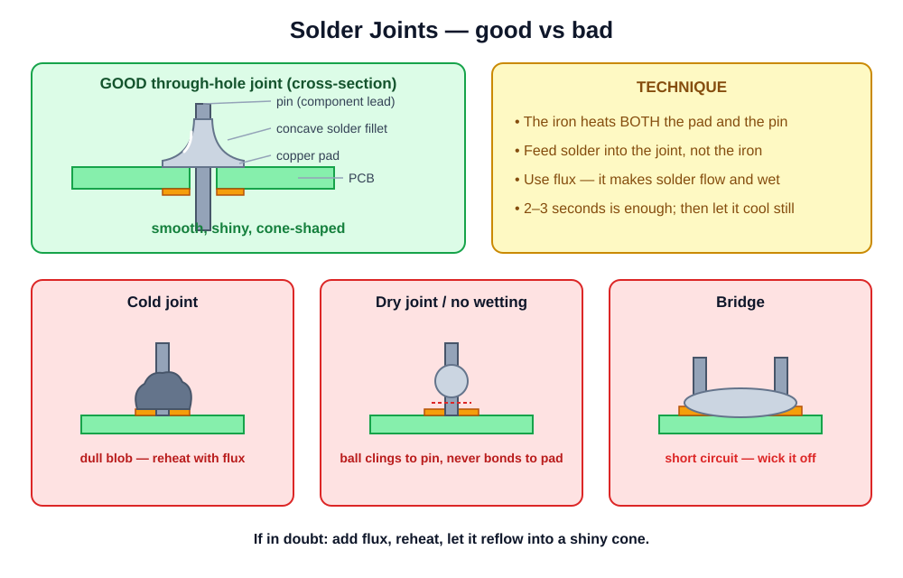

Today you stop swapping parts and start repairing connections.
Day 4 of 5 · morning block · ~1 h theory · bench practical · quiz
Safety recital, then set the tone: soldering is the skill that separates parts-swappers from technicians, and it is 90% muscle memory — today plants the seed, but they must practice for weeks after. Show a phone board fixed with a single solder joint: "this repair cost 2 cents of solder and 10 minutes."
Manage expectations from minute one: nobody leaves today ready to re-solder a phone charging port on a customer's device. They leave with correct fundamentals and a practice plan. Bad habits learned now take months to unlearn — that's why we drill technique on practice kits, not phones.
The iron tip is 300+ °C. It looks exactly the same hot or cold.
Point at the fume extractor / open windows NOW and make it physical like the Module 1 battery bin. The "smoke" rising off a joint is vaporized flux, not lead — but you still don't breathe it. Lead doesn't evaporate at iron temperatures; the hand-washing rule is about residue transferring to food. These four rules are graded pass/fail in today's practical.
Tour a real station as you talk — pick up each item. Explain why the cheap fixed-temperature "firestick" irons frustrate beginners: no control means burnt flux and dead tips. A decent temperature-controlled station costs less than one phone screen and lasts years. Wet cellulose sponges work too but thermal-shock the tip; brass is kinder.
| Solder | Iron setting | Notes |
|---|---|---|
| Leaded Sn63 (training standard) | 300–330 °C | Flows easily, forgiving — what we learn on |
| Lead-free | 330–380 °C | Higher melt point, needs more flux |
Cranking the dial to 450 °C doesn't help — the flux burns off instantly, the joint oxidizes, the tip blackens, and pads lift. If a joint won't take, the answer is flux and contact, not heat.
This is the #1 beginner error: "it's not melting, turn it up." Explain the real causes of "not melting": dirty tip, no flux, or the tip touching the wrong spot. Note the trade-off honestly: leaded solder is easier to learn and still common in repair; lead-free is the manufacturing standard (RoHS). We train on leaded, hence the hygiene rules.
A black, oxidized tip transfers no heat. You'll press harder and longer, damage the board, and still make bad joints. Tip condition is the first thing to check when soldering goes wrong.
Demo the difference live: touch solder to a shiny tinned tip (instant melt and flow) vs an oxidized area (solder balls up and rolls off). Show tip rescue: flux + fresh solder scrubbed on brass, or tip tinner. End-of-session ritual from today: clean, tin fat, THEN switch off — the blob of solder protects the tip while it cools and between sessions.
"Solder flows toward clean, hot, fluxed metal."
Make them memorize the quoted rule — it explains almost every soldering success and failure they'll ever have. Demo: two copper pads, one fluxed, one not, same iron, same solder — the fluxed one wets instantly and shines, the bare one beads. Note that solder wire has a flux core, but for repair work you almost always add extra paste flux. Clean residue off with IPA afterwards.

Walk the diagram: the GOOD joint is a shiny, smooth cone/fillet — concave sides, wetted onto both pad and lead, you can see the lead's outline. Then the three villains: COLD (dull, grainy blob — moved or under-heated while solidifying), DRY (solder sitting on top, no wetting — oxide or no flux), BRIDGE (solder connecting two pads that must not touch — a short circuit). They will grade their own joints against this diagram in the practical.
| Joint | Looks like | Cause | Fix |
|---|---|---|---|
| Cold | Dull, grainy, lumpy blob | Too little heat, or moved while cooling | Flux, reheat until it flows, hold still |
| Dry | Ball sitting on the pad, no wetting | Oxide — dirty surface, no flux | Clean, flux, redo |
| Bridge | Solder connecting neighbouring pads | Too much solder, sloppy iron path | Flux + drag away, or wick it off |
A bridge is a short circuit. On a phone board, powering up with a bridge can kill the very chip you were saving. Inspect before power — every time.
Pass around example boards with each fault (make them in advance). The inspect-before-power habit ties back to diagnosis discipline: magnification + good light after every job. In the practical, students must NAME the fault on their own bad joints — diagnosis of your own work is the fastest way to improve.
Step 3 is where beginners fail: melting solder on the tip and carrying it over makes cold, dry joints — the flux burned off in transit. The work must be hot enough to melt the solder.
Demo this three times under the camera/visualizer: normal speed, then slow with narration, then normal again. Count aloud: "touch — one — feed — off — off — still." Total contact time about 2–3 seconds. Have the class chant the four steps back. Everything in today's practical is these four steps at different scales.
resources/videos.mdMost students watched this as homework — treat it as review. Pause on a close-up of a finished joint and have the class grade it against the anatomy diagram. Answer to bullet three: cleans the tip on brass — between EVERY joint, and it takes half a second.
Through-hole is your training ground: big pads, forgiving, visible results.
Through-hole barely exists inside phones, but it's where hands learn heat control — every micro-soldering specialist started here. The "volcano" shape is the visual pass mark. Warn about lead clipping: hold the clipped end or angle it downward — this is why glasses are on. Practice boards for this are at station B today.
Forgot the heatshrink before soldering? Everyone does it once. Tape is not the fix — desolder, add the sleeve, redo.
Where this earns money: battery connector wires, speaker wires, aftermarket part leads, and countless non-phone side jobs (headphones, toys, chargers) that walk into every repair shop. Demo a full splice start to finish including the deliberate "forgot the heatshrink" gag — they'll remember the laugh, and the lesson.
resources/videos.mdPoint out that the mechanical connection comes FIRST — the western-union twist holds by itself before solder touches it. Solder secures and conducts; it is not glue and not filler. That principle scales all the way to board work.
Copper braid + flux, pressed onto the joint under the iron — capillary action drinks the solder up. Precise; the go-to for pads and bridges.
Melt the joint, spring-loaded vacuum slurps the bulk. Great for through-hole holes; crude near small parts.
Never lever or pull a component while pads are still soldered — that's how pads rip off the board. Heat until free, always.
Demo both on a scrap board. Wick secret: add flux to the wick itself — dry wick barely works and students conclude wick is useless. Move to a fresh section of braid each press; used braid is a heat sink. Lifted pads are the classic desoldering injury — which previews the jumper-wire slide later.
Live demo under the microscope camera if available. The tin-one-pad-first trick is the whole game for two-pad parts — trying to heat both pads at once with one iron is how parts tombstone (stand up on end). Drag soldering looks like cheating the first time they see it: flux does the separation work. Bridges after a drag are normal — wick fixes them, no shame.
Practice boards only for now. On a real phone board, hot air near the battery connector, plastics, or shields you didn't mean to melt = expensive lessons.
Demo removing a small SMD part from a scrap board: foil skirt around the target, circles, watch for the solder to go shiny/liquid, part slides at a touch. Common beginner errors: max airflow (part vanishes across the room) and pulling before full reflow (pads come with it). Connect to Module 1: hot air near a battery is a fire drill waiting to happen.
This is aspirational today — watch the demo, understand the concept. It becomes achievable after weeks of SMD practice, and it's how the pros rescue "hopeless" boards.
Demo (or show video close-up) of running one jumper — even a rough attempt makes the concept concrete. Explain enamel wire: insulation burns off at the tinned tip, so it can run across a crowded board without shorting. The takeaway isn't the skill — it's hope: a damaged pad, including one THEY damage in practice, is repairable with technique they can grow into.
Wires, connectors, through-hole, simple two-pad SMD, desoldering, careful hot-air on practice boards.
IC reballing, CPU/NAND work, board-level diagnosis under a microscope — months of dedicated practice + serious equipment. Know a referral partner.
Realistic milestone: with hot-air practice, port-on-board replacement (the Module 6 job we deferred) becomes possible. That one skill pays for the practice time.
Repeat the Module 5 message: referring out is professional, not defeat. Give the growth path concretely: 1) daily joints on practice kits for 2–4 weeks, 2) SMD parts on scrap boards, 3) port replacement on donor boards with hot air, 4) first paid port-on-board job. If they haven't found a local micro-soldering partner yet, that's this week's business homework.
resources/videos.mdPurpose of this video is motivation, not instruction: everything the specialist does is built from today's fundamentals, done smaller and steadier. Ask afterwards: "Which of today's four steps did you see under that microscope?" Answer: all of them — clean+flux, heat both, feed the joint, hold still. The scale changed; the physics didn't.
Class: listen for anything missed — you're the reviewers.
Listen for "feed solder into the JOINT, not the iron" in the first, the oxide story in the second, and wick-for-bridges in the third. Weak answers here predict burnt boards at the stations — re-demo before releasing them. Confirm every student has glasses on before the practical starts.
| Station | Task |
|---|---|
| A | Tin wire ends & make two splices (western-union + heatshrink) on the practice kit |
| B | Populate a through-hole practice board — every joint a shiny volcano |
| C | Desolder joints from a scrap board with wick + flux (pump on through-hole) — no lifted pads |
| D | Drag-solder a pin header; fix your own bridges with wick |
All joints inspected under magnification and graded against the good/bad diagram. Worksheet: practicals/practical-07-soldering.md
Enforce the safety four (fumes, glasses, holder, hand-washing) as pass/fail. Grading: each student self-grades their joints first (cold/dry/bridge/good), THEN you grade — the self-diagnosis is worth as much as the joints. Expect station D to produce bridges; fixing them cleanly IS the exercise. Rotate roughly hourly; tip-cleaning ritual at every rotation.
Next: Module 8 — water damage & corrosion treatment.
Hand out the quiz from assessments/module-quizzes.md; inspect benches — including tip condition on every iron (clean, tinned, off). Iron tips tell you who listened. Tease Module 8: "Next session you'll see what a week in rice really does to a board — bring a strong stomach." Send practice kits home with anyone willing to take one.